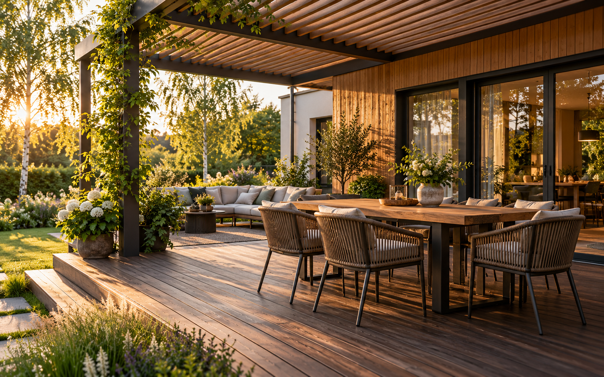
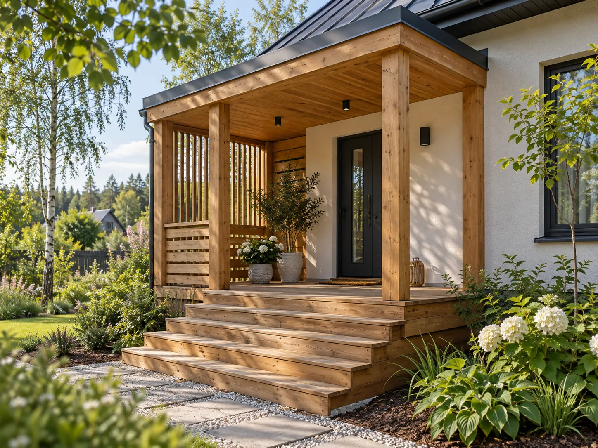
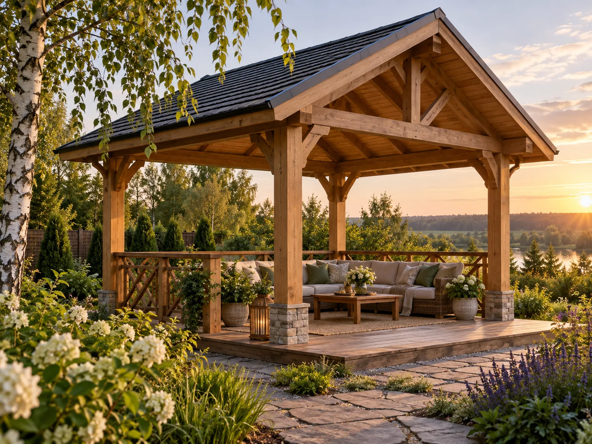
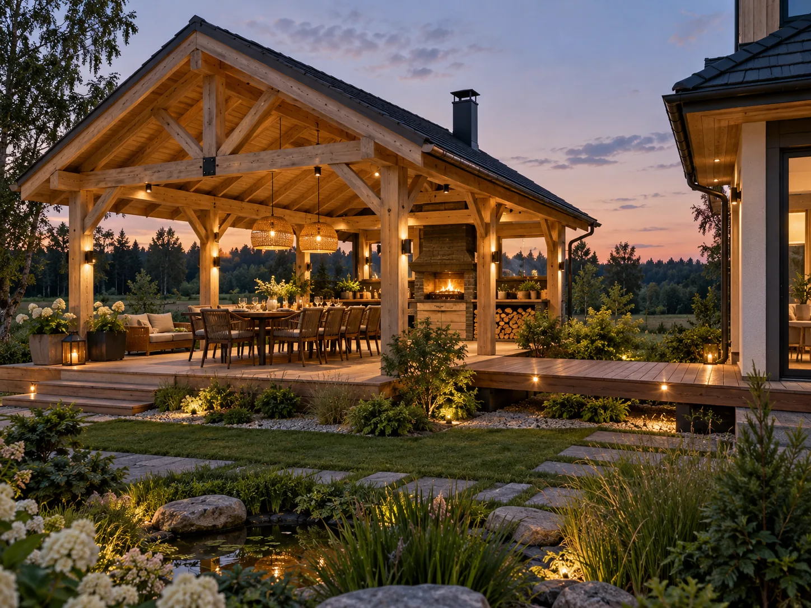

01 / ТЕРРАСА
Открытая терраса
Настил у дома без крыши — для отдыха, солнца и прямого выхода в сад.
Обсудить вариант ↗
Создаём террасы, веранды и навесы для вашего дома. Обсудим вашу идею и найдём решение для участка.

Иллюстрация идеи для вашей террасыНесколько вариантов для вдохновения. Изображения иллюстративные: подходящую конструкцию и возможность её реализации обсудите с Александром.
Настил у дома без крыши — для отдыха, солнца и прямого выхода в сад.
Обсудить вариант ↗Место рядом с домом, где крыша даёт тень и укрывает от дождя.
Обсудить вариант ↗
Более закрытое пространство с видом на участок и защитой от ветра.
Обсудить вариант ↗
Удобный вход с площадкой, ступенями и навесом из дерева.
Обсудить вариант ↗
Отдельный уголок в саду, где можно собраться вместе за столом.
Обсудить вариант ↗
Крытая площадка для встреч на воздухе с удобным переходом из дома.
Обсудить вариант ↗
Утренний кофе на воздухе, семейный ужин или тихий вечер во дворе. Расскажите, как вы хотите пользоваться пространством, а мы обсудим подходящую конструкцию.
Посмотреть направления работ ↗Фото участка или дома поможет начать разговор о вашей террасе.
Каким вы видите пространство: открытым, под крышей или рядом с входом?
Обсудите задачу напрямую и задайте вопросы до начала работ.
Напишите или позвоните Александру. Минск и область.
Позвонить: +375 (25) 99-7-9999 ↗Написать в Instagram ↗